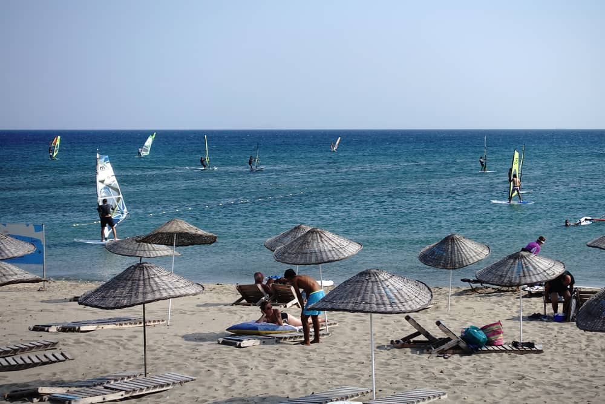
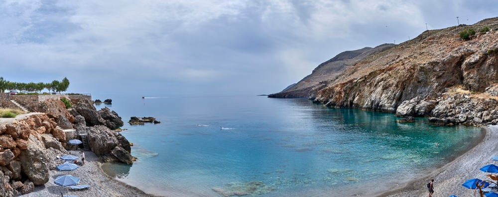
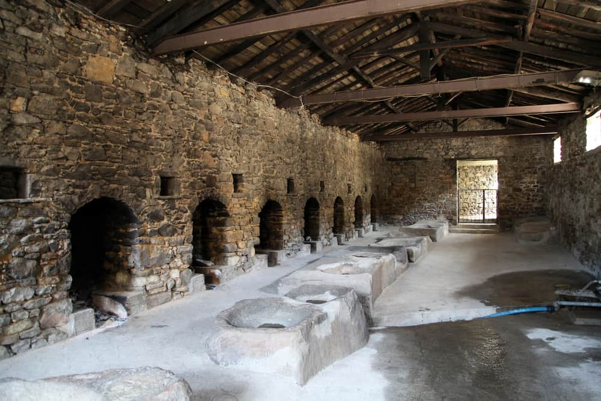

DOĞA İLE GEZ'E HOŞELDİNİZ
GÖKÇEADA
Ana Sayfa
Çanakkale
Bozcaada
Gökçeada
Assos
Ülkemize bağlı en büyük ada olan Gökçeada, 1970 yılından önceki adıyla İmroz, Çanakkale Boğazı’nın açıklarında yer alıyor ve Türkiye’nin en batı noktasını oluşturuyor.
Eskiden Rum nüfusun çoğunlukta olduğu ada, Lozan Görüşmeleri sırasında İngiltere’nin baskılarıyla özerk statüye geçirilmeye çalışılmış ama daha önce bu tuzağa Girit ve Kıbrıs’ta düşen Türk yönetimi neyse ki üçüncü kez kanmamış.
Osmanlı’nın bir zayıf anında Girit’in özerkliğini kabul ettirdikten sonra özerk yönetim önce bağımsızlık ilan etmiş, hemen ardından da Yunanistan’a bağlanma kararı almıştır. Aynı senaryoyu Kıbrıs için uygulamaya kalkmaları ise elli yıldır süren malum durumu yarattı.
Böylece Gökçeada, Çanakkale’ye bağlı bir ilçe haline gelmiş. Adadaki Rum nüfus ise aslında mübadeleden muaf tutulduğundan gitmeyip burada kalmış ama Kıbrıs’ta yaşanan olaylardan dolayı çıkan sıkıntılar neticesinde 1970 civarında adadan taşınmış.
Şimdi sadece dört Rum köyü bulunan adada geri kalan yerleşimlerde genelde ülkemizin doğu illerinden göçmüş kişiler oturuyor.
Ege Denizi’nin kuzey kısmında yer alan Gökçeada, düşük nüfus yoğunluğu sayesinde korunmuş doğası ve ada olmasının getirdiği çok sayıda kumsalı sayesinde turistler için cazip bir rota.
İster denize girmek, ister mehtaba karşı keyif çatmak için tercih edebileceğiniz bir yer. Gerçi deniz biraz soğuk, haberiniz olsun. Tabii özellikle serin sevenler de çıkacaktır!
Bu yazımda Gökçeada geziniz için bilmeniz gereken her şeyi inceleyeceğiz.

Gökçeada'da gezebileceğiniz yerler:
- Aydıncık Plajı: Aydıncık Plajı, eski adıyla Kefaloz Plajı, ilçe merkezine biraz uzak olsa da dolmuşla gidilebiliyor.
Çok uzun bir kumsal, üstelik ince kumdan bir sahili var. Deniz ise yukarıdan bahsettiğim gibi biraz soğuk ama derler ya “girince alışıyorsun”.
Bence en önemli eksisi epey rüzgarlı olması, bu benim gibi yüzmeyi çok sevenlerin işini biraz zorlaştırıyor ancak öte yandan adada Rüzgar Sörfü’nün gelişmesini sağlamış.
Denizi kaplayan rengarenk sörf yelkenleri insana Alaçatı’yı anımsatıyor. Buraya isterseniz günübirlik gelip şezlong kiralayabilir, daha deniz ağırlıklı bir tatil yapmak veya rüzgar sörfü yapmak isterseniz de buradaki pansiyonlarda konaklayabilirsiniz.

- Yıldız Koyu:Adada denize girebileceğiniz bir diğer nokta ise Yıldız Koyu. Burası Türkiye’nin tek su altı milli parkı olan Gökçeada Sualtı Milli Parkı’nın bir parçası.
Aydıncık Plajı’ndan bir hayli farklı olan Yıldız Koyu dar bir alanda yer alıyor ve ince kum değil çakıl zemine sahip. Deniz ise bu sayede olağanüstü bir berraklığa sahip. Dolayısıyla şnorkel için harika bir yer. Rüzgarın etkisi de daha az hissediliyor.
Yıldız Koyu’nda da günübirlik olarak gelen turistler için şezlong kiralama ve restoran bulunuyor, ayrıca çok yakın olan Bademli Köy’de de kalabilirsiniz.
Bademli Köy’de konaklayanlar biraz daha uzağa gitmeyi göze alırlarsa Yıldız Koyu’nun doğusunda kalan Mavi Koy’a da gidebilirler. Daha az kişi oluyor, hatta yoğun dönemin dışında kalan aylarda bazen tüm koyda bir başınıza bile kalabiliyorsunuz. Tabii tesis de daha az.

- Tuz Gölü:Ayrıca adada minyatür bir Tuz Gölü de yer alıyor, adanın güneydoğu köşesinde Aydıncık Plajı ile Eşelek Koyu’nun arasında bulunduğundan bu sahillere gitmişken bir uğrayabilirsiniz.
Rumlar tarafından Aliki olarak adlandırılan bu gölün çamuru cilde (hatta genel olarak sağlığa) iyi geldiğine dair bir inanış nedeniyle toplanıp bir nevi bakım maskesi kullanılıyor.

- Çamaşırhane:Gökçeada ilçe merkezinde bulunan Çamaşırhane, turistlerin mutlaka uğradıkların noktaların arasında yer alıyor.
1909 yılında yapılan binanın iki yanı neredeyse tamamen açık. İçeride ise çamaşır yıkamak için kurulmuş düzen görülebiliyor.
Aslında adanın diğer mahalleleri ve köylerinde de benzer eski çamaşırhaneler mevcut, Özellikle Dereköy Çamaşırhanesi bir hayli büyük, zaten eskiden burası adanın yönetim merkeziymiş ve en büyük yerleşimiymiş.

Gökçeada otellerine bakmak için tıklayınız.